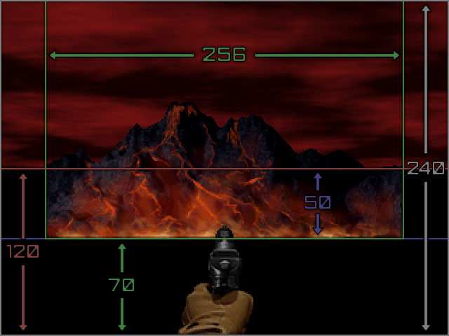

Sky Graphics
On PC engines the SKYDEFS text lump holds the definitions for all skies in the wad. Only the SKYDEFS from the last loaded wad will be used. If you want to use some new skies and some of the original skies in the same wad, you must include the definitions for the original skies in your SKYDEFS. The diagram below shows how the sky and background graphics are positioned on the screen.
Doom 64 originally rendered at 320 pixels by 240 pixels, thus the above diagram is pixel-accurate to that resolution. At higher screen resolutions, the pixel area covered is larger. However when designing new background graphics, the pixel sizes remain true to this diagram.
Each sky requires its own unique texture to be included in the wad. It doesn't matter what image the texture contains, as the texture is only used to assign the sky to the ceiling/floor of sectors. Assigning a sky texture to a ceiling or floor is what determines which sky will be used in that map. There can only be one sky used per map unless you are using an engine like EX+, which has a special linedef action to change the sky.
Custom Sky Definitions
Settings and options for skies can be found on the SKYDEFS text lump page. Many of these settings allow you to change the colors of the sky without changing the graphics. Use the following steps to define a custom sky.
- Set up your SKYDEFS text lump and add it to the wad with Slade.
- Add a custom texture to the wad with the texture name you used in the SKYDEFS.
- Use that texture on a floor/ceiling of your map.
Here's a wad you can use as an example with a new Earth-like sky.
Custom Sky Graphics
In general custom sky graphics are in PNG format or are converted from PNG format. Sky backgrounds, clouds, and other sky graphics must be added between the markers G_START and G_END. Sky backgrounds can have transparency. The mountains in various skies use this. And for PC engines, partial transparencies are supported which give even more options for overlays. Sky graphics must be paletted to 256 colors for the Nintendo 64.
Custom Clouds
Although the original sky cloud texture is 64x64, sky clouds do not need to be that size, nor do they need to be square. This can be used for high-resolution clouds. You can follow the steps below to add custom cloud graphics.
- Make a new cloud texture, save it as an 8-bit png, and import into your wad between G_START and G_END.
- In the SKYDEF, use the name of the new cloud texture for pic, and use cloud to make the sky render clouds.
Here's an example wad with an Earth sky that uses a new cloud texture. Notice how the clouds in game are more subtle than they are in the sky using the original cloud texture in this wad. That's one example of how new clouds can be used for new effects in skies.
Custom Backgrounds
Background graphics, such as static skies and mountains, must be 256 pixels wide. Other widths will still load, however they will scroll oddly when the player rotates. Follow the steps below to add custom background graphics.
- Make a new sky background, save it as a png, and import into your wad between G_START and G_END.
- In the SKYDEF, use the name of the new background texture for backpic.
- If your background has transparency, like in the mountain textures, then use cloud and pic to render clouds as well.
Here's an example wad with a new Hell sky background (based off the finale pic at the end of the game).